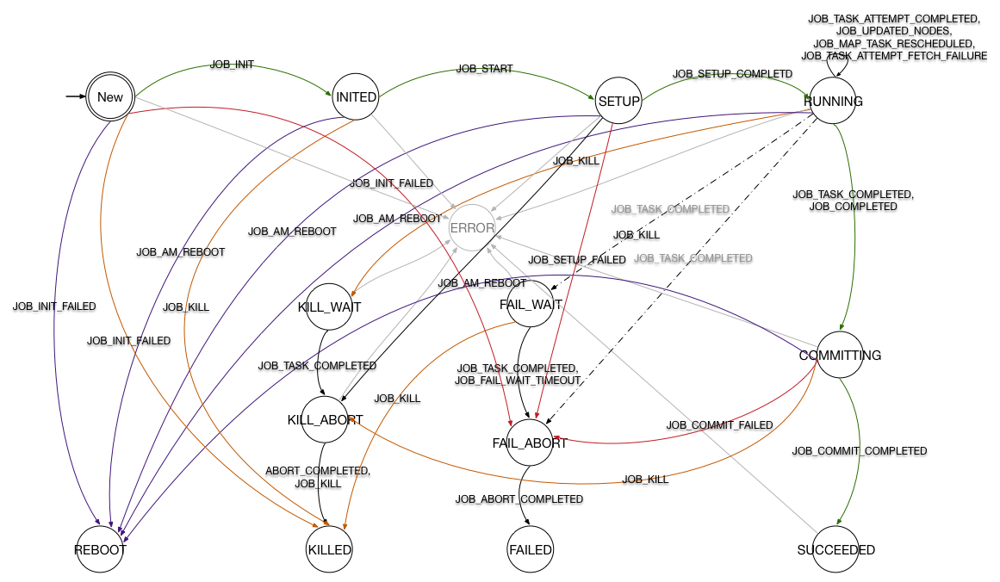
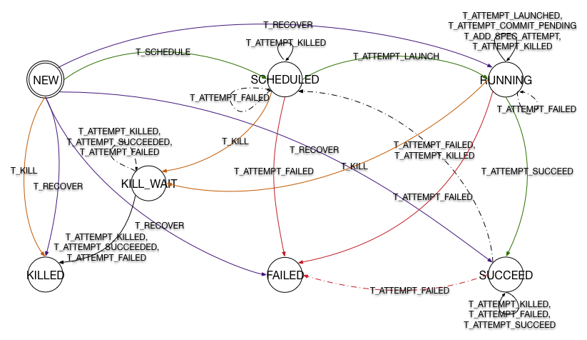
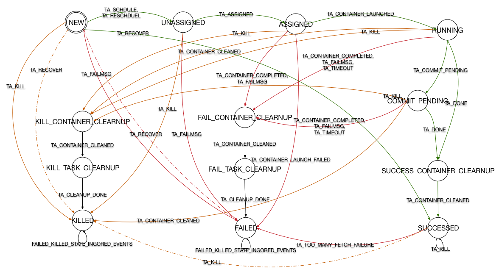

Hadoop MapReduce 状态机类结构
之前的文章YARN 流程分析中提到 MR v2 之后对流程的控制都以 Actor Model 的形式进行(Actor Model (参与者模式)思想与实例)。
Hadoop MapReduce 中的状态机被封装hadoop-mapreduce-client-appmodule 的几个类中，其目录结构如下：
org.apache.hadoop.mapreduce.v2.app.job event
JobEvent
JobEventType
JobFinishEvent
JobStartEvent
…
impl
JobImpl
MapTaskImpl
ReduceTaskImpl
TaskImpl
TaskAttemptImpl
Job
JobStateInternal
Task
TaskAttempt
TaskStateInternal
其中 StateInternal 是一个枚举类型，其中封装了各状态机的所有状态，接口中规定了一些 get 方法，用于读取作业或任务的状态信息。
event 包中包含了这里用到的事件，正是这些事件被 handle 或 dispatch 导致了状态机变迁的发生，而变迁发生又会根据需要产生新的事件推动整个系统的进行。
impl 包中则为创建这些状态机的类，每个类中包含大量实现SingleArcTransition或MultipleArcTransition接口的内部类，这些内部类分别代表着一个变迁。
接口中只规定了一个方法
public STATE transition(OPERAND operand, EVENT event);
任何变迁都要实现这个方法，保证在接收到某事件后可做出一系列操作并进入下一状态。
状态机类都包含一个静态变量stateMachineFactory用于将状态与变迁连接到一起，形成状态机。
StateMachineFactory是 YARN 中一个不可变类，用final修饰，它提供了一个方法addTransition()
public StateMachineFactory
<OPERAND, STATE, EVENTTYPE, EVENT>
addTransition(STATE preState, STATE postState,
EVENTTYPE eventType,
SingleArcTransition<OPERAND, EVENT> hook){
return new StateMachineFactory<OPERAND, STATE, EVENTTYPE, EVENT>
(this, new ApplicableSingleOrMultipleTransition<OPERAND, STATE, EVENTTYPE, EVENT>
(preState, eventType, new SingleInternalArc(postState, hook)));
}
可以看出，这个方法采用链式编程的原则，所以在初始化stateMachineFactory的时候，可以不断调用该方法向状态机中加入新的变迁。 该方法另有4个重载方法，其一与之类似，将后置状态改为一个Set，SingleArcTransition 改为 multipleArcTransition，用于根据事件中的具体情况判断变迁如何进行。 另两个取消 hook 参数，用于添加可忽略的事件，最后一个重载方法将返回一个新的状态机。 所有变迁添加完成后调用installTopology()完成状态机的创建。
状态机及变迁分析
因官方提供下载的 FSM 并没有随着版本更新，在下面我对 Hadoop 2.7.3 中的状态机进行了绘制。下图中考虑到可见性有部分省略，需要确认变迁请参照上章节内容到源代码中查看。
图中绿色线代表正常流程，红色线代表失效，黄色线代表关闭。
虚线表现了一部分 multipleArcTransition，也就是在收到某事件时，将进一步判断事件内部信息来决定状态机变迁如何产生。
驱动整个状态机的入口在handle()方法中，首先将写操作上锁，然后获取当前状态，然后执行doTransition()。在该方法中捕获到InvalidStateTransitionException时，
首先更新状态，然后生成InternalError事件，状态机计入Error状态。
JobImpl
状态机
JobImpl 中创建的状态机如下图所示，为了清晰度省略了一部分变迁。

Hadoop提供了作业级别的容错能力，图中紫色线将重启作业，而灰色线则代表发生InternalError时进入Error状态。
变迁(待填坑)
TaskImpl
状态机

变迁(待填坑)
TaskAttemptImpl
状态机

变迁
- RequestContainerTransition: 在状态机拓扑建立完成后，状态机处于NEW。此时收到
SCHEDULE 或 RESCHEDULE 事件后将触发本变迁，若是为发生故障的 container 重新申请资源则调用
ContainerRequest中的一个静态方法，该方法中对资源的申请不再考虑到本地性的问题。 而首次申请资源则将 dataLocalHosts 以及 dataLocalRacks 作为参数传入ContainerRequest的构造方法中。状态机进入UNASSIGNED。 - ContainerAssignedTransition: UNASSIGNED 下收到 ASSIGNED 触发本变迁，这时对
TaskAttemptImpl中的成员变量赋值。其中包括由事件传入的参数 container, 通过子类重新的方法createRemoteTask()的返回值得到的 remoteTask, 将以上两者组合封装的 JvmID。最后将 remoteTask 和 JvmID 作为参数向taskAttemptListener中注册。 此外发送两个事件:ContainerRemoteLaunchEvent和SpeculatorEvent。 变量remoteTask实际上是一个Task的实例，也就是一个 Map 或 Reduce 任务运行的实际类。在注释中可以看出这个引用采用懒加载方式， 一旦任务开始运行后将这个引用设置为空，大概占用 30KB的内存。变迁结束后状态机进入 ASSIGNED。 - LaunchedContainerTransition: ASSIGNED 下收到 CONTAINER_LAUNCHED 触发本变迁，首先同样是对成员变量进行赋值，并且向 TaskAttemptListener 注册开始监听事件。通过
NetUtils:createSocketAddr 创建通信地址并赋值给相应成员变量。在这里将以后不再使用的 remoteTask 设置为 null 以释放内存。最后创建 ATTEMPT_LAUNCHED 事件。 - CommitPendingTransition: 对于需要 commit 的任务，收到 TA_COMMIT_PENDING后执行本变迁，这里只进行了一个操作，向 eventHandler 中发送了 T_ATTEMPT_COMMIT_PENDING 事件，由
TaskImpl进行处理。 - CleanupContainerTransition: 处于 RUNNING 状态或 COMMIT_PENDING 下收到 DONE 消息时执行本变迁。首先向 TaskAttemptListener 注销以停止对本 Attempt 的监听，此变迁还有可能执行与收到 KILL 事件时，这时要设置 reschedule 标记。
- SucceedTransition: 处于 SUCCESS_CONTAINER_CLEANUP 状态下收到 TA_CONTAINER_CLEANED 事件后将触发本变迁。 设置完成时间，发送与完成相关的几个事件。
- DeallocateContainerTransition: 收到 TA_KILL和 TA_FAILMSG 时，本变迁被执行。首先设置该任务的完成时间，对于 TaskAttemptKillEvent 来说还要通过 getMessage() 方法获取诊断信息。然后发出
CONTAINER_DEALLOATE事件。若从 UNASSIGNED 状态转移而来，还要撤回需求。然后判断终态为 FAILED 还是 KILLED分别发出对应事件。此外还需要一个TaskAttemptUnsuccessultCompletionEvent来封装终态以及 taskAttempt。 - TaskCleanupTransition: 处于 CONTAINER_CLEANUP 状态下时通过此变迁进入 TASK_CLEANUP
- KilledTransition: 被 Kill 的任务的终态，封装相关信息发出
TaskTAttemptKillEvent。 - FailedTransition: FAIL 的任务的终态，封装相关信息发出
T_ATTEMPT_FAILED。 - TooMAnyFetchFailureTransition: 对于处于 SUCCEED 状态下的 Map 任务，可能出现该变迁，经过封装信息后发出 T_ATTEMPT_FAILED 事件，任务进入 FAILD 状态。